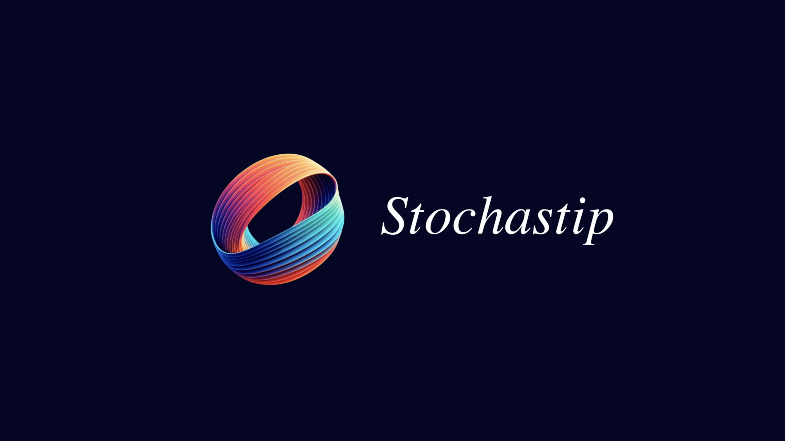
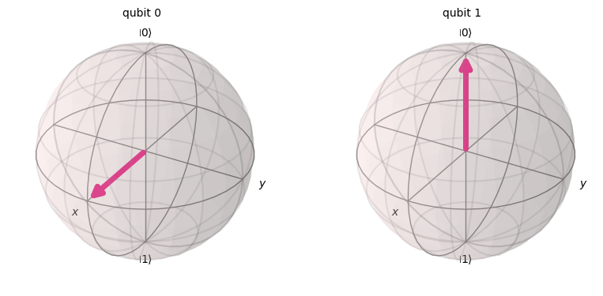
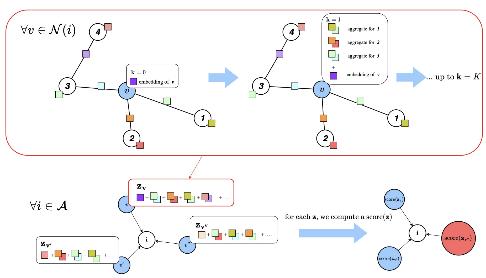

- PROJECTS
- PUBLICATION

Brownian Motion and Random Walks Simulation
Making fancy animations of Stochastip ProcessManim
Python


Introduction to Quantum Computing with Qiskit
beginner-friendly guide to quantum computing and information, completed with code examples using QiskitQiskit

Generative AI for haptic textures
Internship at CNRS - InriaC++

Graph Neural Network-based Multi-agent Reinforcement Learning for Resilient Distributed Coordination of Multi-Robot Systems
We introduce MAGEC, a new MARL method trained using multi-agent PPO, resilient to agent attrition, partial observability, and limited communicationsAccepted to IROS 2024 !